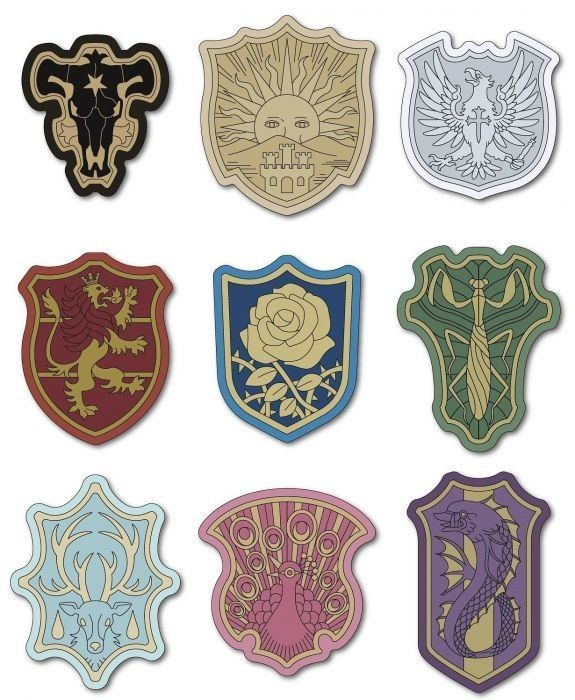

Ordenes de caballeria 
Toros negros
Liderado por Yami Sukehiro, especializado en magia oscura.
Amanecer dorado
Considerado el escuadrón de élite, liderado por Williams Vangeance.
Aguilas plateadas
Liderado por Nozel Silva, este escuadrón de nobles es conocido por su orgullo y habilidades en la magia de agua y mercurio.
Leones carmesi
Escuadrón centrado en magia de fuego, liderado por Mereoleona Vermillion. Sus miembros son conocidos por su valentía y habilidades combativas.
Rosas azules
Escuadrón mayormente femenino, liderado por Charlotte Roselei, experto en magia de espinas. Se destaca por su lealtad y disciplina.
Orcas moradas
Liderado anteriormente por Gueldre Poizot y ahora liderado por Kaiser Granvorka, este escuadrón se enfoca en magia de sigilo y espionaje. Ha tenido problemas de corrupción en el pasado.
Mantis verdes
Liderado por Jack the Ripper, conocido por su estilo de combate salvaje y su habilidad para cortar casi cualquier cosa con su magia de corte.
Pavo real coral
Este escuadrón es liderado por Dorothy Unsworth, quien posee magia de sueño, capaz de crear un mundo de sueños en combate.
Ciervos celestes
Un escuadrón conocido por su defensa, antiguamente liderado por Julius Novachrono y ahora liderado por Rill Boismortier. Se especializan en habilidades mágicas defensivas.